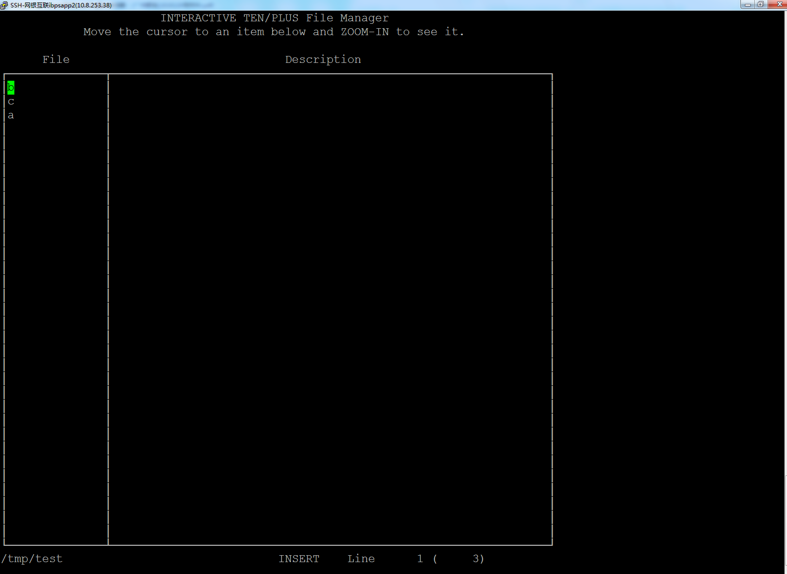
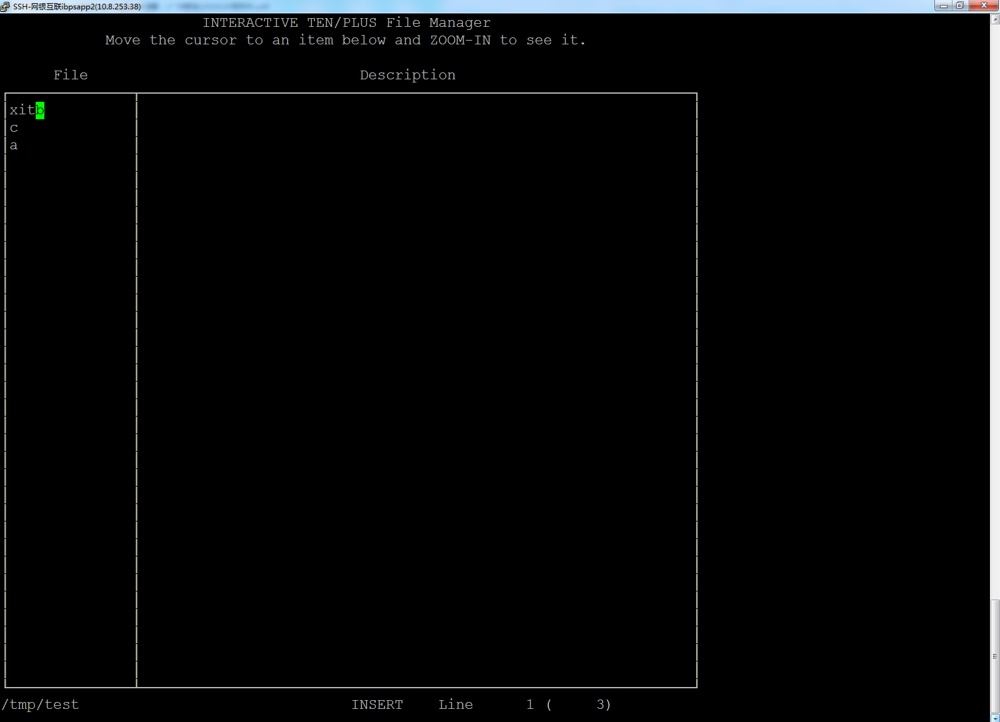

可怕的e命令
故障
监控告警某系统业务成功率突然下降了一半，在排查应用日志后发现有一台机一直提示打开文件失败，经过与正常机器对比，发现有一个文件目录消失了。 而使用history查看操作历史并未发现有任何人做删除操作。
原因
通过KVM历史回顾，发现故障产生的时候，有个同事运行了一个很奇怪的命令 e.
与该同事进行沟通，该同事反映它当时只是想执行 exit 操作，但可能中途不小心按到了回车符，所以就变成了执行命令 e. 该同事发现运行了错误的程序后随即关闭了终端窗口。
经过复盘，我们发现在AIX上 e 命令运行的是一个 INTERACTIVE TEN/PLUS File Manager, 其会打开一个双面板的界面，其中左边列出了当前目录下的所有文件(和目录),像下面这样

随后输入的任何字母都会 立即 修改光标所在的文件名(输入的字母会插在文件名前面). 所以当那个同事输入后面的 xit 时，实际上已经把光标所在的文件名给改了，像下面这样:

随后运行 ls -ld xit* 果然看到被修改的文件名
解决办法
为了防止再出现类似的情况，最好是卸载该命令。 e 是 bos.INed 中的命令，然而由于不能确定还有哪些应用依赖于该包，所以还是不敢直接卸载该包。
最后只能临时取消 e 命令的执行权限
chmod -x /usr/bin/e